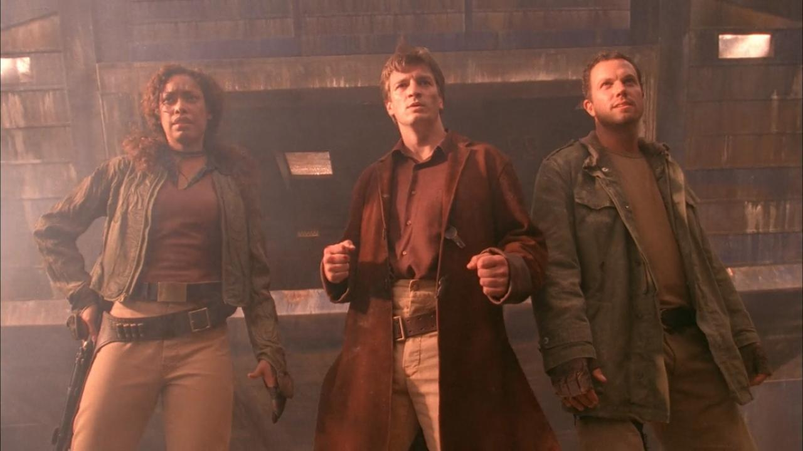

1. Serenity (Capítulo Piloto)

Título Original: Serenity
Director: Joss Whedon
Sinopsis: El capitán Malcolm Reynolds y su tripulación aceptan un trabajo de contrabando, pero todo se complica al descubrir que sus nuevos pasajeros son prófugos buscados por la Alianza.